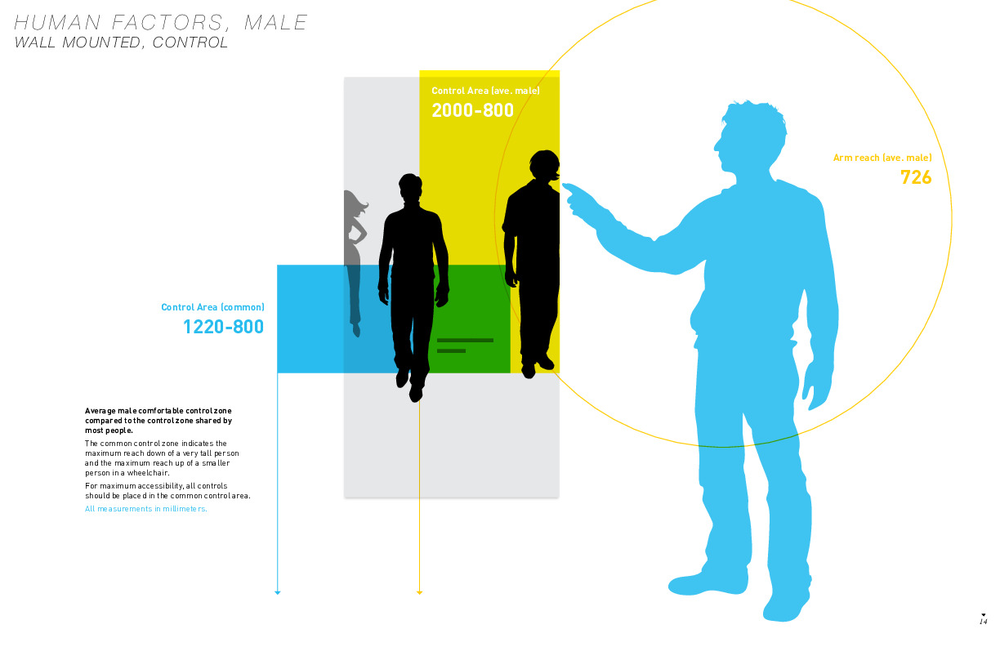
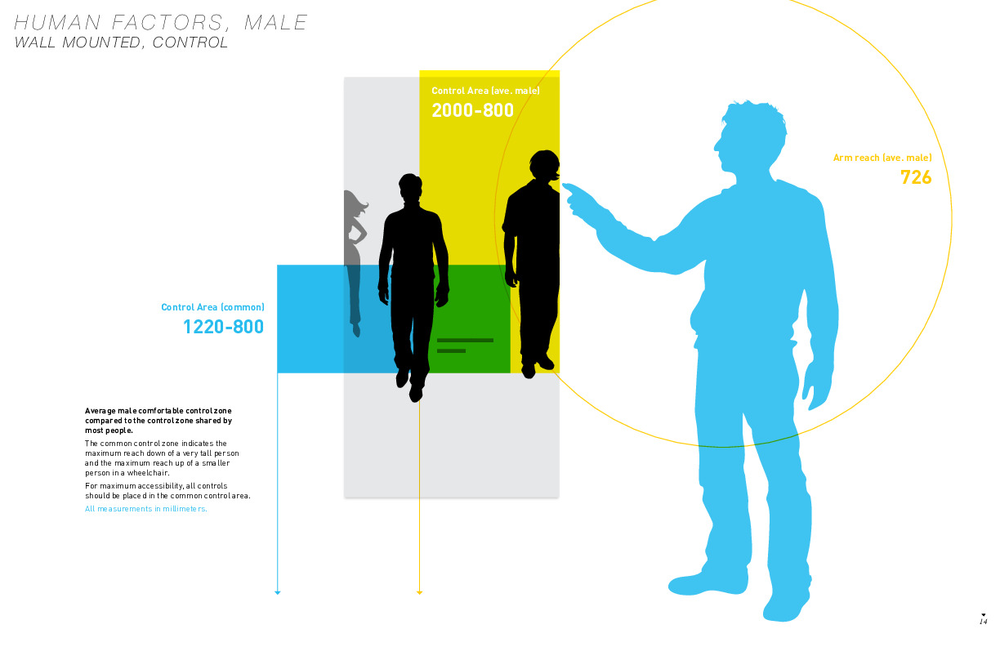

Calvin Klein
Business Goals
Bring back awareness and increase sales of CK jeans.
Challenges
Creating intuitive gesture control of the screen and video. How will customers know they can interact with the screens without audio?
Solutions
Prototype in paper. Test. Iterate. Prototype touch screen. Test.
Role
I lead the interface design and user experience for both screens. I collaborated with a video production team and an interactive display company who programmed and installed the screens.
Calvin Klein installed wall mounted and desktop interactive screens in eighteen of their stores. I was given a creative brief from an agency and the technical specs of the interactive screen to create a Fit Guide for CK Jeans. The video and look and feel was inspired by Calvin Klein's 'white room ads'. The scale was 1:1 in order to give viewers a real idea of how the jeans would fit them. Visitors could select any of the looks on the screen from an ambient video role, and see details of the different washes and fit of the jeans. I had to get people to interact with the screen without audio. I worked closely with the hardware team to create the experience.
User journey
The user journey needed to be written and sketched in order to shoot and edit the video.
Human Factors
We followed best practices for average heights in the USA. We printed mock-ups of the interface and created it on the wall of the studio in order to test some of our measurements with many different sized people.
 


Gesture-based UI
We followed best practices for average heights in the USA. We printed mock-ups of the interface and created it on the wall of the studio in order to test some of our measurements with many different sized people.